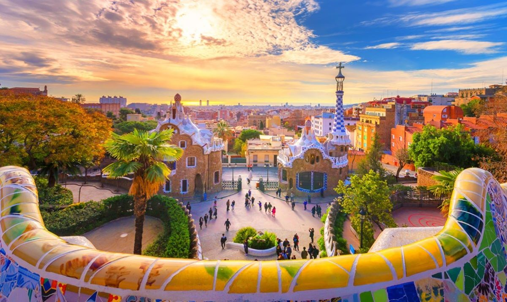
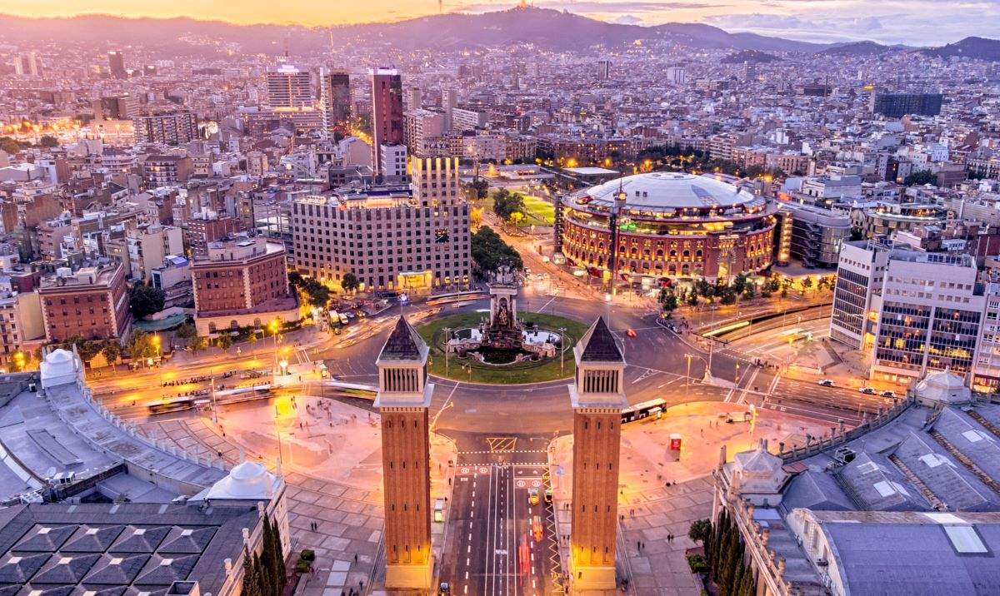

La decisión de elegir un barrio u otro no siempre es fácil y dependerá de tus preferencias y gustos. Barcelona ciudad es la capital de Cataluña y se divide en 10 distritos (Ciutat Vella, El Ensanche, Sants Montjuic, Les Corts, Sarriá - San Gervasi, Gracia, Horta Guinardó, Nou Barris, San Andrés, San Martí).
| # | Barrios de Barcelona |
|---|---|
| 1 | Gracia |
| 2 | Eixample |
| 3 | Poblenou |
| 4 | Sarriá - San Gervasi |
| 5 | Ciutat Vella |
Es uno de los barrios con más encanto en Barcelona. Corresponde a la antigua
villa independiente de Gracia, y los barrios de Camp de Grassot i Gràcia Nova, etc. Hasta el siglo XVIII
Gracia era considerado un pueblo rural conformado por varias masías, las cuales son antiguas casas de
campo, típicas catalanas. También se caracterizaba por tener grandes casas señoriales de la antigua
burguesía, consideradas segunda vivienda de las personas más adineradas de la ciudad. Luego de la
Revolución Industrial, este barrio se convirtió en una de las piezas clave de la expansión de la ciudad.
Se construyó en los años de la industrialización de Cataluña, a finales del
siglo XIX y a comienzos del siglo XX. Por una parte tenemos la Eixample Dreta que abarca todo el sector
de Consell de Cent y Roger de Llúria. Era considerado el barrio de la antigua burguesía catalana, donde
cada casa y edificio tenía su propio estilo arquitectónico, aunque ahora es mundialmente conocido por
albergar algunas de las obras maestras de Gaudí como La Pedrera, Casa Batló y Casa Ametller. Y luego
tenemos la Eixample Esquerra, zona que se caracteriza por sus galerías de arte, coquetas y selectas
cafeterías, boutiques de lujo. Fue diseñado por IIdefonso Cerdá y es en este barrio donde podemos
encontrar las vías y plazas más reconocidas de Barcelona como Enrique Granados o el Parque de Joan Miró.
El mayor atractivo de Poblenou es su cercanía con las principales playas de la
ciudad. Además, es un barrio que ha estado en auge estos últimos años con la creación del distrito 22@,
iniciativa del ayuntamiento de Barcelona para convertir esta antigua zona industrial en uno de los
sectores con espacios más modernos y productivos de la ciudad. Es aquí donde las empresas conviven con
diversas universidades de prestigio, junto con start ups, medios audiovisuales, tecnologías de la
información, entre otros.
Considerado como la zona alta de la ciudad, Sarriá - San Gervasi se aleja del
ruido y de la congestión, convirtiéndose en un barrio más bien residencial. Su principal característica
es la tranquilidad que se respira en sus calles, además de las fantásticas viviendas de alto standing
que se pueden encontrar. Además es una zona con muchas tiendas y restaurantes de primer nivel. Es un
barrio perfecto para vivir en familia o para personas que deseen alejarse del bullicio.
El mayor atractivo de Poblenou es su cercanía con las principales playas de la
ciudad. Además, es un barrio que ha estado en auge estos últimos años con la creación del distrito 22@,
iniciativa del ayuntamiento de Barcelona para convertir esta antigua zona industrial en uno de los
sectores con espacios más modernos y productivos de la ciudad. Es aquí donde las empresas conviven con
diversas universidades de prestigio, junto con start ups, medios audiovisuales, tecnologías de la
información, entre otros.